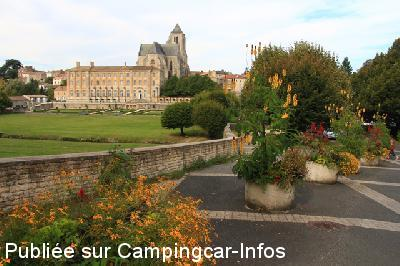
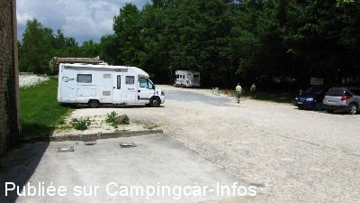
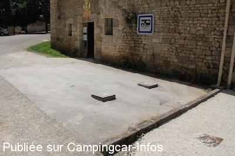
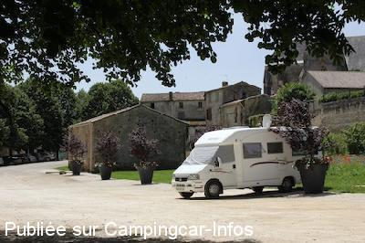
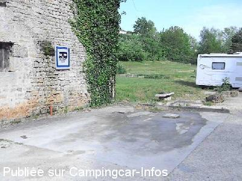

ASN = Aire de services avec stationnement nuit possible de :
CELLES SUR BELLE
(N° 211)
Accès/adresse :
Rue des Halles
Parking de Aumônerie
79370 CELLES SUR BELLE
Parking de Aumônerie
79370 CELLES SUR BELLE
Latitude : (Nord) 46.26196° Décimaux ou 46° 15′ 43′′
Longitude : (Ouest) -0.20818° Décimaux ou 0° 12′ 29′′
Tarif : Gratuit
Type de borne : Plateforme
Services :


Tous commerces
Autres informations :
Ouvert toute l'année
Tel : +33(0) 549 329 228
http://www.ville-celles-sur-belle.com/index.php

Le 04/10/2014 par Paul Guntz

Le 20/07/2014 par A et B

Le 06/07/2012 par Renaud Delarroque

Le 06/07/2012 par Renaud Delarroque

Le 08/05/2011 par fsar
de
Nicole
le 05/12/2015 :
Aire bien située au cœur du village, mais toujours boueuse en temps de pluie, rien n'a été fait depuis 2008,aux nids de poule ! Excellent pour dormir au calme. par contre les services eau et cassette très primaire !!!!!
Aire bien située au cœur du village, mais toujours boueuse en temps de pluie, rien n'a été fait depuis 2008,aux nids de poule ! Excellent pour dormir au calme. par contre les services eau et cassette très primaire !!!!!
de
loulou
le 02/11/2014 :
aire tres agreable dans petit bourg sympa petit bemol l'angelus a 6h30
aire tres agreable dans petit bourg sympa petit bemol l'angelus a 6h30
de
Paul Guntz
le 04/10/2014 :
De passage le 14/09/14 - Bonjour,
Pour le parking diurne, en cas de culte à l'abbaye, il est difficile voire impossible de se garer. Il vaut mieux revenir plus tard.
De passage le 14/09/14 - Bonjour,
Pour le parking diurne, en cas de culte à l'abbaye, il est difficile voire impossible de se garer. Il vaut mieux revenir plus tard.
de
2miro
le 24/08/2014 :
bonsoir, de passage le 2 aout au soir , aire compris service entièrement gratuite ,simple d'accès,mais encombré de voitures ce soir la, car il y avait un concert de piano à l'abbaye!donc il a fallu patienter jusque 22h que les places soit de nouveau libres! à part ce léger contretemps nuit calme et agréable.
bonsoir, de passage le 2 aout au soir , aire compris service entièrement gratuite ,simple d'accès,mais encombré de voitures ce soir la, car il y avait un concert de piano à l'abbaye!donc il a fallu patienter jusque 22h que les places soit de nouveau libres! à part ce léger contretemps nuit calme et agréable.
de
a&b
le 20/07/2014 :
Dober dan!
Parkiri¨če pod drevesi ob gradu. Voda, parkiranje zastonj. Vsaj 15 mest! Mirno ponoči. Tudi parkiranje za avtobuse z obiskovalci.
Dober dan!
Parkiri¨če pod drevesi ob gradu. Voda, parkiranje zastonj. Vsaj 15 mest! Mirno ponoči. Tudi parkiranje za avtobuse z obiskovalci.
de
R. Tanguy
le 13/07/2012 :
Village très agréable.
Aire calme; tous services; gratuit; ombragé.
L'Abbaye royale Notre Dame, XII ème siècle, aux allures de forteresse, domine majestueusement la vallée de la Belle. Architecture romane. Elle fut une étape importante sur la route de St Jacques de compostelle.
Village très agréable.
Aire calme; tous services; gratuit; ombragé.
L'Abbaye royale Notre Dame, XII ème siècle, aux allures de forteresse, domine majestueusement la vallée de la Belle. Architecture romane. Elle fut une étape importante sur la route de St Jacques de compostelle.
de
Jaquetroc
le 14/07/2011 :
De passage le 13 juillet, nous savions qu'un feu d'artifice était tiré le soir mais nous ignorions qu'il était si célèbre. Le soir, vers 17 h. Monsieur l'adjoint du maire est venu en personne pour informer les camping-caristes que la commune attendait entre dix et douze mille personnes et que nous étions cordialement invités au spectacle... Et ce fut magnifique ! Un grand merci à la commune pour cet accueil.
De passage le 13 juillet, nous savions qu'un feu d'artifice était tiré le soir mais nous ignorions qu'il était si célèbre. Le soir, vers 17 h. Monsieur l'adjoint du maire est venu en personne pour informer les camping-caristes que la commune attendait entre dix et douze mille personnes et que nous étions cordialement invités au spectacle... Et ce fut magnifique ! Un grand merci à la commune pour cet accueil.
de
Jacques
le 02/09/2010 :
De passage par hasard, je me suis arrêté sur cette aire très reposante car très calme, à proximité du centre du village, face à l'Abbaye du Roi (que j'ai visitée du reste), à 5kms d'un superbe plan d'eau. Je recommande.
Pour répondre à un commentaire, je préfère être réveillé par les bruits de la nature tels que coq, vaches et moutons en lieu et place de la Benne à Ordures.
De passage par hasard, je me suis arrêté sur cette aire très reposante car très calme, à proximité du centre du village, face à l'Abbaye du Roi (que j'ai visitée du reste), à 5kms d'un superbe plan d'eau. Je recommande.
Pour répondre à un commentaire, je préfère être réveillé par les bruits de la nature tels que coq, vaches et moutons en lieu et place de la Benne à Ordures.
de
patty
le 04/07/2009 :
Très beau feu d'artifice musical. Aire gratuite, beau site à visiter avec son abbaye royale et ses jardins. Pas de cloches la nuit, commerces à proximité (boulangerie, fleuriste, pharmacie, restaurant..), table de pique-nique, ancien lavoir.
Aire sympa et tranquille, il y a meme un camion pizza les jeudis et samedis soirs qui méritent le détour. En plus, c'est aussi une camping-cariste.
Très beau feu d'artifice musical. Aire gratuite, beau site à visiter avec son abbaye royale et ses jardins. Pas de cloches la nuit, commerces à proximité (boulangerie, fleuriste, pharmacie, restaurant..), table de pique-nique, ancien lavoir.
Aire sympa et tranquille, il y a meme un camion pizza les jeudis et samedis soirs qui méritent le détour. En plus, c'est aussi une camping-cariste.
de
ternoc
le 11/05/2009 :
Petit village très sympa. Aire très calme (mais concert de cocoricos à 5H30 du matin!, les sonneries de cloches de l'abbaye s'arrêtent la nuit)
Je n'ai pas compris comment vidanger les eaux grises (à moins de viser pile poile les receptacles au sol). Effectivement le sol est très collant aux semelles en cas de pluie, mais le site est vraiment agréable, à proximité immédiate des commerces. La prise d'eau peut se faire via un robinet de puisage avec bec fileté (de l'autre côté du poteau (gratuit). Merci à la minicipalité.
Petit village très sympa. Aire très calme (mais concert de cocoricos à 5H30 du matin!, les sonneries de cloches de l'abbaye s'arrêtent la nuit)
Je n'ai pas compris comment vidanger les eaux grises (à moins de viser pile poile les receptacles au sol). Effectivement le sol est très collant aux semelles en cas de pluie, mais le site est vraiment agréable, à proximité immédiate des commerces. La prise d'eau peut se faire via un robinet de puisage avec bec fileté (de l'autre côté du poteau (gratuit). Merci à la minicipalité.
de
nicole lebrun
le 17/11/2008 :
De passage le 26.10. Aire très calme - en accord avec Hervé eaux grises à revoir - Mr le Maire l'a promis - par contre, en cas de pluie le sol est boueux avec des nids de poule - nuit très calme. La boulangerie près de l'Abbaye est Super. nini 18
De passage le 26.10. Aire très calme - en accord avec Hervé eaux grises à revoir - Mr le Maire l'a promis - par contre, en cas de pluie le sol est boueux avec des nids de poule - nuit très calme. La boulangerie près de l'Abbaye est Super. nini 18
de
Hervé
le 19/04/2008 :
Merci à cette municipalité qui a mis à disposition des camping-caristes une magnifique Aire + Parking Gratuit. Il faudrait quand même revoir la vidange des eaux grises car trop périlleuse, quelques aménagements pourraient améliorer l'existant.
Par ailleurs, cette municipalité a l'intention de créer des toilettes encore plus près. Tout ceci à quelques mètres du magnifique Parc de l'Abbaye Royale.
Félicitations!
Merci à cette municipalité qui a mis à disposition des camping-caristes une magnifique Aire + Parking Gratuit. Il faudrait quand même revoir la vidange des eaux grises car trop périlleuse, quelques aménagements pourraient améliorer l'existant.
Par ailleurs, cette municipalité a l'intention de créer des toilettes encore plus près. Tout ceci à quelques mètres du magnifique Parc de l'Abbaye Royale.
Félicitations!
de
johnL
le 11/11/2003 :
Site is opposite the Abbey gardens (well worth a look) and signposted well from the main route into town. New facilities. Very quiet with picnic tables provided.
Site is opposite the Abbey gardens (well worth a look) and signposted well from the main route into town. New facilities. Very quiet with picnic tables provided.